library("gt") #great tables
library("janitor") #helps with counts and proportions
library("patchwork") #side-by-side plots
library("tidyverse") #tools for data wrangling and visualization
# school colors
princeton_orange <- "#E77500"
princeton_black <- "#121212"SML 201
Start
Goal: Introduce social science
Objective: Compute probabilities with the normal distribution
NoteLibraries and Helper Functions
# helper function
vnorm <- function(x, mu = 0, sigma = 1, section = "lower"){
# bell curve
x_vals <- seq(mu - 4*sigma, mu + 4*sigma, length.out = 201)
y_vals <- dnorm(x_vals, mu, sigma)
df_for_graph <- data.frame(x_vals, y_vals)
# outline shaded regions
if(length(x) == 1){
shade_left <- rbind(c(x[1],0), df_for_graph |>
filter(x_vals < x[1]))
shade_right <- rbind(c(x[1],0), df_for_graph |>
filter(x_vals > x[1]))
}
if(length(x) == 2){
shade_between <- rbind(c(x[1],0),
df_for_graph |>
filter(x_vals > x[1] &
x_vals < x[2]),
c(x[2],0))
shade_tails <- rbind(df_for_graph |>
filter(x_vals < x[1]),
c(x[1],0),
c(x[2],0),
df_for_graph |>
filter(x_vals > x[2]))
}
if(section %in% c("less", "lower")){
bell_curve <- df_for_graph |>
ggplot(aes(x_vals, y_vals)) +
geom_polygon(aes(x = x_vals, y = y_vals),
data = shade_left,
fill = "#E77500",) +
geom_line(color = "gray50", linewidth = 2)
prob_val <- round(pnorm(x,mu,sigma), 4)
}
if(section %in% c("greater", "upper")){
bell_curve <- df_for_graph |>
ggplot(aes(x_vals, y_vals)) +
geom_polygon(aes(x = x_vals, y = y_vals),
data = shade_right,
fill = "#E77500",) +
geom_line(color = "gray50", linewidth = 2)
prob_val <- 1 - round(pnorm(x,mu,sigma), 4)
}
if(section == "between"){
bell_curve <- df_for_graph |>
ggplot(aes(x_vals, y_vals)) +
geom_polygon(aes(x = x_vals, y = y_vals),
data = shade_between,
fill = "#E77500",) +
geom_line(color = "gray50", linewidth = 2)
prob_val <- round(diff(pnorm(x,mu,sigma)), 4)
}
if(section %in% c("tails", "two.sided", "two_sided")){
bell_curve <- df_for_graph |>
ggplot(aes(x_vals, y_vals)) +
geom_polygon(aes(x = x_vals, y = y_vals),
data = shade_tails,
fill = "#E77500",) +
geom_line(color = "gray50", linewidth = 2)
prob_val <- round(1 - diff(pnorm(x,mu,sigma)), 4)
}
# plot bell curve
bell_curve +
labs(subtitle = paste0("Probability: ", prob_val),
caption = "SML 201", y = "") +
theme_minimal()
}vbinom <- function(k_obs, n, p, labels = TRUE){
# make data frame
k_vals <- 0:n
pk <- dbinom(k_vals, n, p)
k_bool <- k_vals %in% k_obs
df_binom <- data.frame(k_vals, pk, k_bool)
# compute requested probability
answer_prob = round(sum(dbinom(k_obs, n, p)), 4)
# define bar plot
this_plot <- if(labels){
df_binom |>
ggplot(aes(x = factor(k_vals), y = pk, color = k_bool, fill = k_bool)) +
geom_bar(stat = "identity") +
geom_label(aes(x = factor(k_vals), y = pk, label = round(pk, 4)),
color = "black", fill = "white") +
labs(subtitle = paste0("n = ", n, ", k = ", list(k_obs), ", p = ", p, ", P(k = ", list(k_obs), ") = ", answer_prob),
caption = "SML 201",
y = "probability") +
scale_color_manual(values = c("gray70", "#121212")) +
scale_fill_manual(values = c("gray70", "#E77500")) +
theme(
legend.position = "bottom",
panel.background = element_blank()
)
} else{
df_binom |>
ggplot(aes(x = factor(k_vals), y = pk, color = k_bool, fill = k_bool)) +
geom_bar(stat = "identity") +
labs(subtitle = paste0("n = ", n, ", k = ", list(k_obs), ", p = ", p, ", P(k = ", list(k_obs), ") = ", answer_prob),
caption = "SML 201",
y = "probability") +
scale_color_manual(values = c("gray70", "#121212")) +
scale_fill_manual(values = c("gray70", "#E77500")) +
theme(
legend.position = "bottom",
panel.background = element_blank()
)
}
# plot bar chart
this_plot
}Normal Distribution
NoteGeneral Normal Distribution
When we model applications with \(X \sim N(\mu, \sigma^{2})\), by applying the \(z\)-score transformation
\[z = \frac{x - \mu}{\sigma}\]
the normal distribution has probability density function
\[\text{PDF: } f(x; \mu, \sigma) = \frac{1}{\sigma\sqrt{2\pi}} \cdot e^{-\frac{1}{2}\left(\frac{x-\mu}{\sigma}\right)^{2}}\]
and cumulative distribution function
\[F(x) = \Phi\left(\frac{x-\mu}{\sigma}\right) = \frac{1}{2}\left[1 + \text{erf}\left(\frac{x-\mu}{\sigma\sqrt{2}}\right)\right]\]
\[~\]
R code: pnorm(x, mu, sd)
Examples
Suppose that the incubation period—that is, the time between being infected with the virus and showing symptoms—for Covid-19 is normally distributed with a mean of 8 days and a standard deviation of 3 days. Find the probability that a randomly selected case demonstrated symptoms in fewer than 7 days.
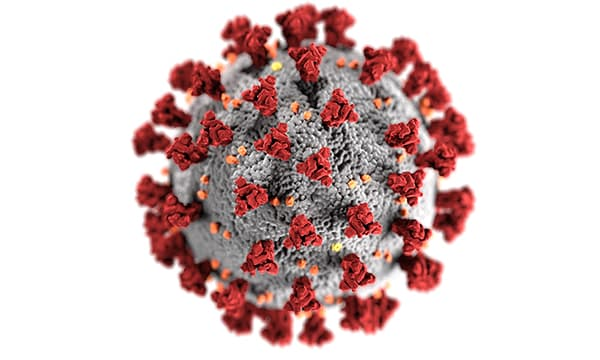
- image credit: University of Chicago
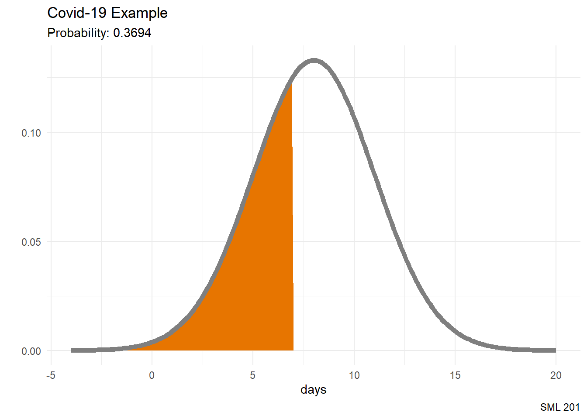
pnorm(7, 8, 3)vnorm(7, 8, 3)
Girl Scout Thin Mint cookies have a mean size of 0.25 ounces. Find the probability that one randomly selected cookie has a size of more than 0.27 ounces if the standard deviation is 0.03 ounces. Assume a normal distribution.
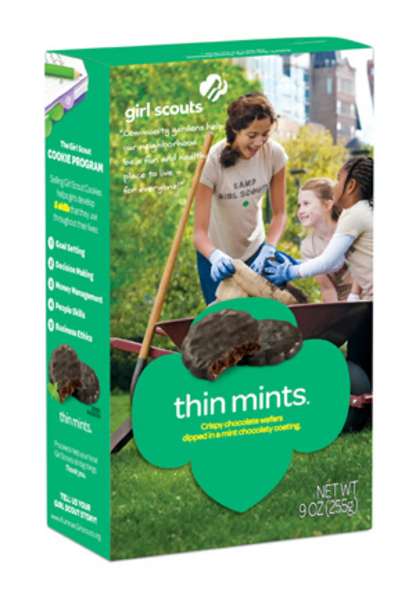
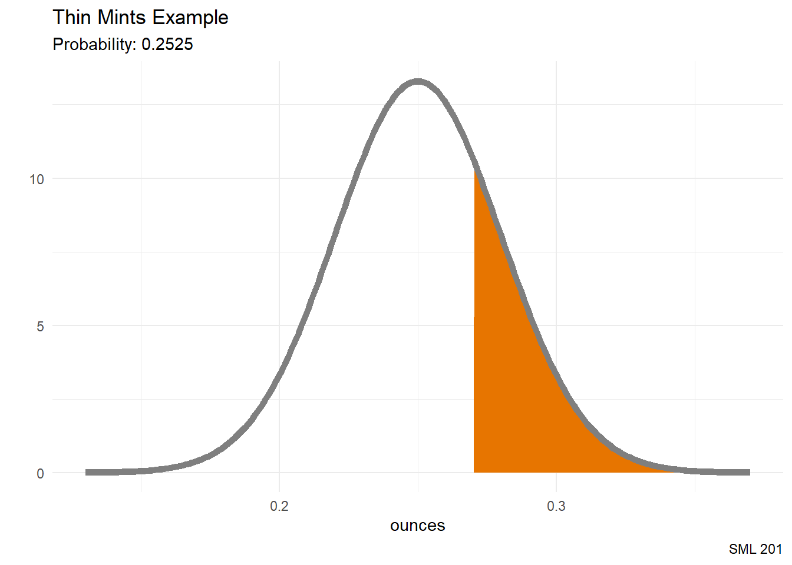
pnorm(0.27, 0.25, 0.03, lower.tail = FALSE)vnorm(0.27, 0.25, 0.03, section = "greater")
The cones in the eye detect light. The absorption rate of cones is normally distributed. In particular, the “green” cones have a mean of 535 nanometers and a standard deviation of 65 nanometers. If an incoming ray of light has wavelengths between 550 and 575 nanometers, calculate the percentage of that ray of light that will be absorbed by the green cones.
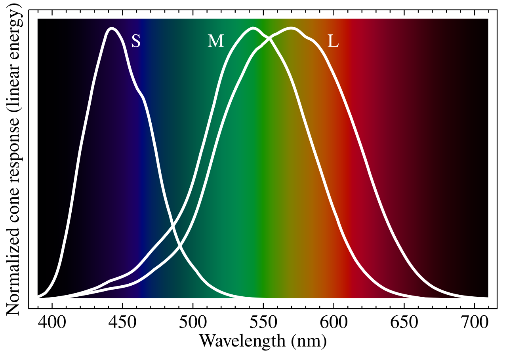
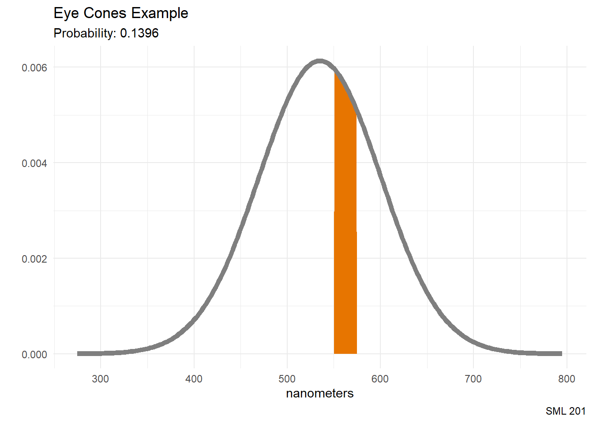
pnorm(575, 535, 65) - pnorm(550, 535, 65)vnorm(c(550, 575), 535, 65, section = "between")
Suppose that the number of french fries in the batches at In-n-Out are normally distributed with a mean of 42 french fries and a standard deviation of 3.7 french fries. Your friend tells you that the In-n-Out employee is flirting with you if you end up with a french fry count in the top 5 percent. How should we characterize the top 5 percent of french fries?
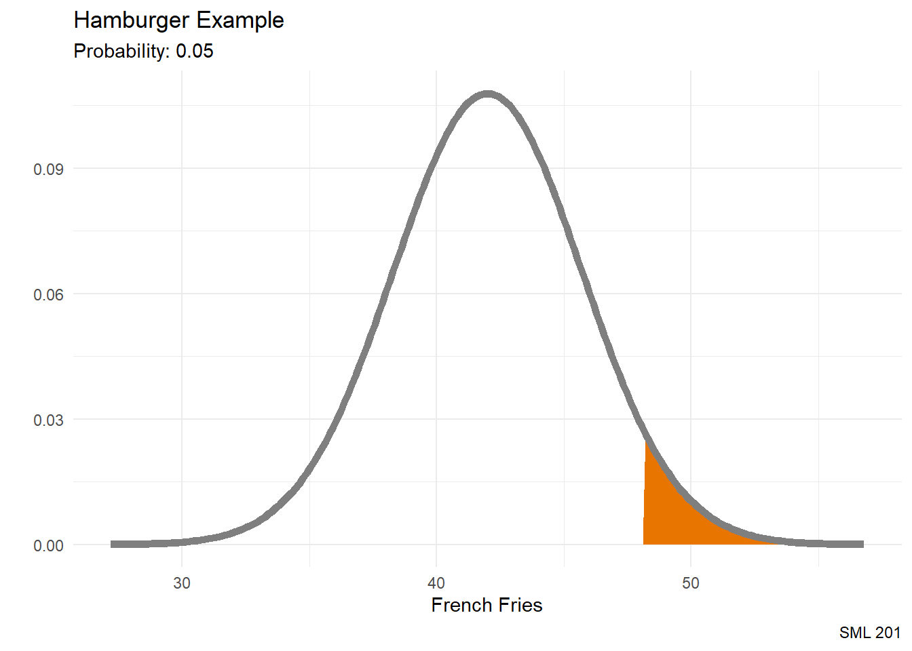
qnorm(0.95, 42, 3.7)vnorm(qnorm(0.95, 42, 3.7), 42, 3.7, section = "greater")
WarningDCP1
Intuition
In order to help students build intuition about the normal distribution, we statistics teachers like to say the following 3 statements about the standard normal distribution (\(\mu = 0\), \(\sigma = 1\)).
vnorm(c(-1,1), 0, 1, section = "between") +
labs(title = "About 68 percent of data falls\nwithin one standard deviation of the mean",
x = "z")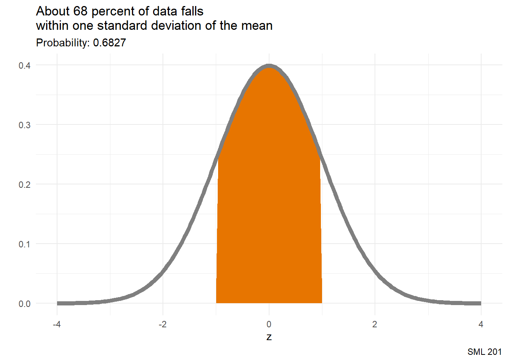
vnorm(c(-2,2), 0, 1, section = "between") +
labs(title = "About 95 percent of data falls\nwithin 2 standard deviations of the mean",
x = "z")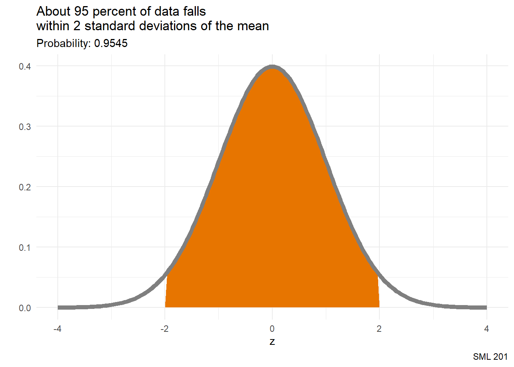
vnorm(c(-3,3), 0, 1, section = "between") +
labs(title = "About 99 percent of data falls\nwithin 3 standard deviations of the mean",
x = "z")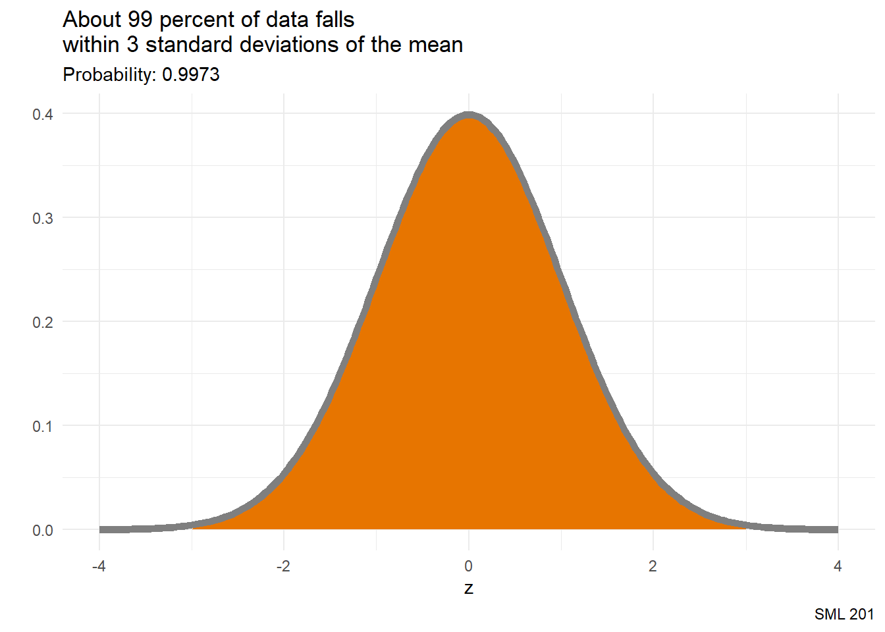
Scenario: Mean Corpuscular Volume
The mean corpusular volume or mean cell volume (MCV) is the average volume of a red blood cell. The following information was gathered, adapted, heavily rounded from the Wikipedia page, and should not constitute medical advice. For these mathematical examples, assume that the mean MCV is \(\mu = 90\) fL/cell with a standard deviation of \(\sigma = 5\) fL/cell and that we can apply the normal distribution based on numerous blood tests.
MedScape says that the reference range for MCV is from 80 to 96 fL/cell. Find the probability that a randomly selected blood test will fall within the reference range. This is also known as normocytic size for MCV.
vnorm(c(80, 96), 90, 5, section = "between") +
labs(title = "MCV Reference Range",
x = "fL/cell")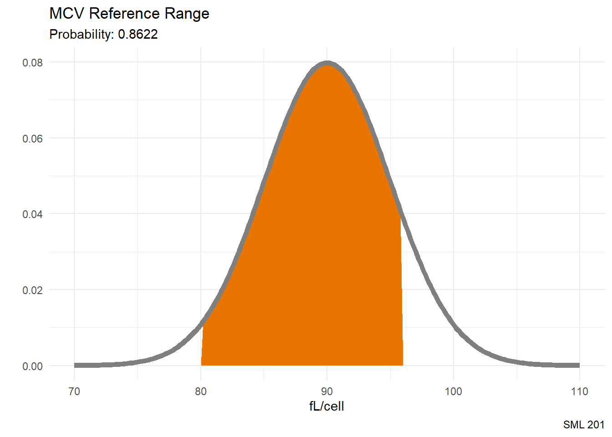
Microcytic anemia describes low levels of MCV and could be caused by diseases such as thalassemia. If microcytic anemia is diagnosed at MCV levels below 80 fL/cell, find the probability that a randomly selected blood test will suggest microcytic anemia.
vnorm(80, 90, 5) +
labs(title = "Microcyctic anemia",
x = "fL/cell")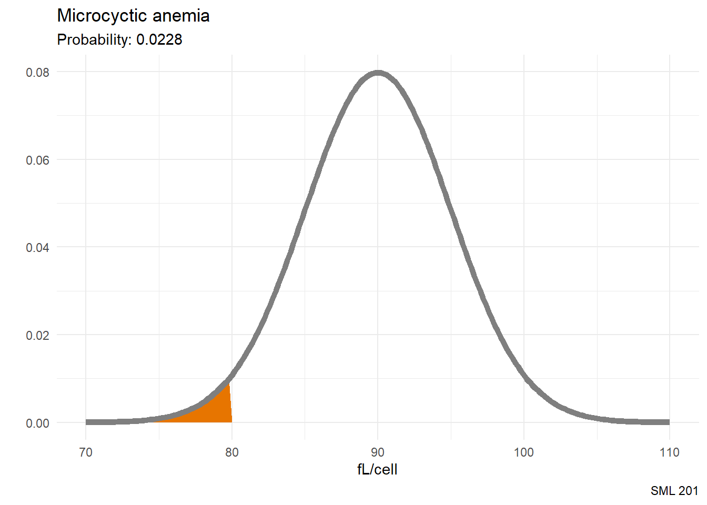
Macrocytic or pernicious anemia describes high levels of MCV, and that may be caused by a nutrient deficiency (for instance, deficiency of vitamin B12). Find the probability that a randomly selected blood test will report an MCV value above 96 fL/cell.
vnorm(96, 90, 5, section = "upper") +
labs(title = "MCV Reference Range",
x = "fL/cell")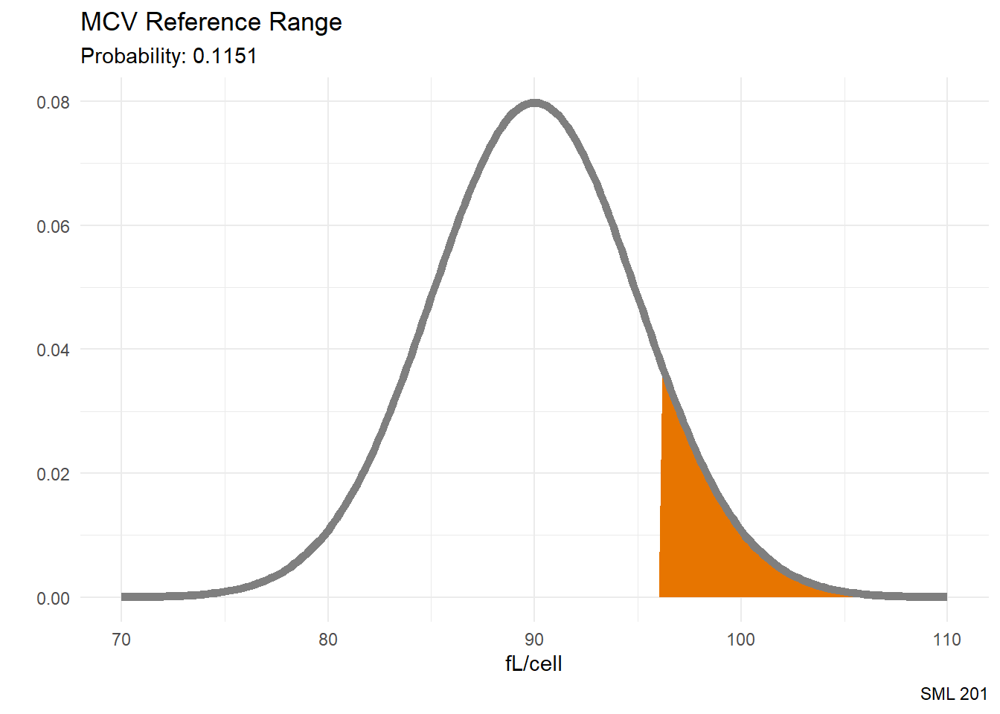
WarningDCP2
Simulation
Suppose that we have 10000 patients whose MCV has mean \(\mu = 90\) fL/cell with a standard deviation of \(\sigma = 5\) fL/cell. From the simulation, what percentage of patients were in each diagnosis category (reference range, microcyctic anemia, macrocyctic anemia)?
num_patients <- 1e5
df_mcv <- data.frame(
id = 1:num_patients,
mcv = rnorm(num_patients, 90, 5)
)df_mcv <- df_mcv |>
mutate(diagnosis = case_when(
mcv >= 96 ~ "macrocyctic anemia",
mcv <= 80 ~ "microcyctic anemia",
.default = "reference range"
))# janitor package helps find proportions
df_mcv |>
tabyl(diagnosis) |>
adorn_totals("row") |>
adorn_pct_formatting() diagnosis n percent
macrocyctic anemia 11379 11.4%
microcyctic anemia 2262 2.3%
reference range 86359 86.4%
Total 100000 100.0%Exogenous
Suppose that we have 10000 patients from a different population whose MCV has mean \(\mu = 88\) fL/cell with a standard deviation of \(\sigma = 3\) fL/cell. From the simulation, what percentage of patients were in each diagnosis category (reference range, microcyctic anemia, macrocyctic anemia)?
df_mcv <- df_mcv |>
mutate(mcv2 = rnorm(num_patients, 88, 3))df_mcv <- df_mcv |>
mutate(diagnosis2 = case_when(
mcv2 >= 96 ~ "macrocyctic anemia",
mcv2 <= 80 ~ "microcyctic anemia",
.default = "reference range"
))
df_mcv |>
tabyl(diagnosis2) |>
adorn_totals("row") |>
adorn_pct_formatting() diagnosis2 n percent
macrocyctic anemia 371 0.4%
microcyctic anemia 384 0.4%
reference range 99245 99.2%
Total 100000 100.0%Case Study: Testosterone
- men testosterone levels: \(\bar{x} = 14.6, s = 6.7\) nmol/L
- women testosterone levels: \(\bar{x} = 2.7, s = 4.3\) nmol/L
- IAAF testing limit (until 2021): 10 nmol/L
Healy, M.L., Gibney, J., Pentecost, C., Wheeler, M.J. and Sonksen, P.H. (2014), Endocrine profiles in 693 elite athletes in the postcompetition setting. Clin Endocrinol, 81: 294-305. https://doi.org/10.1111/cen.12445
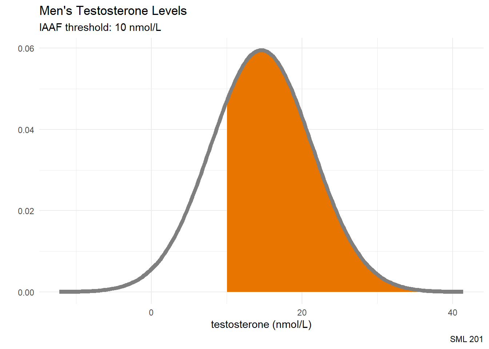
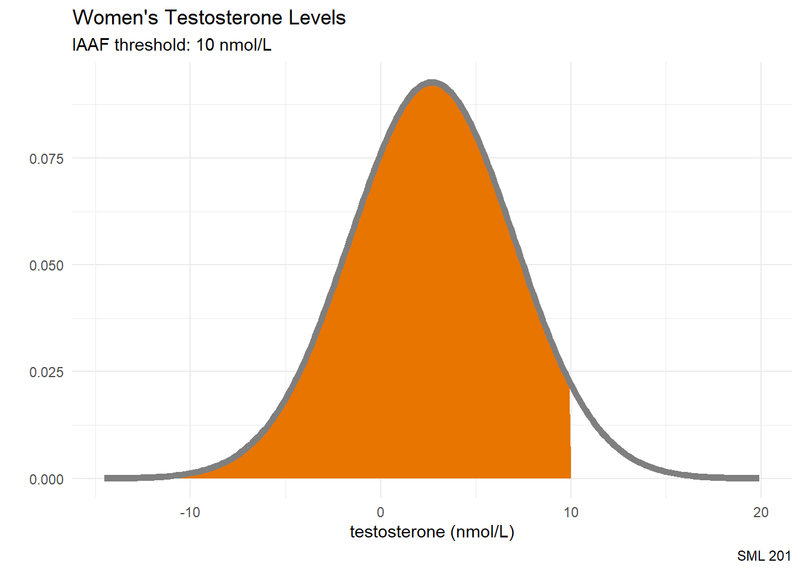
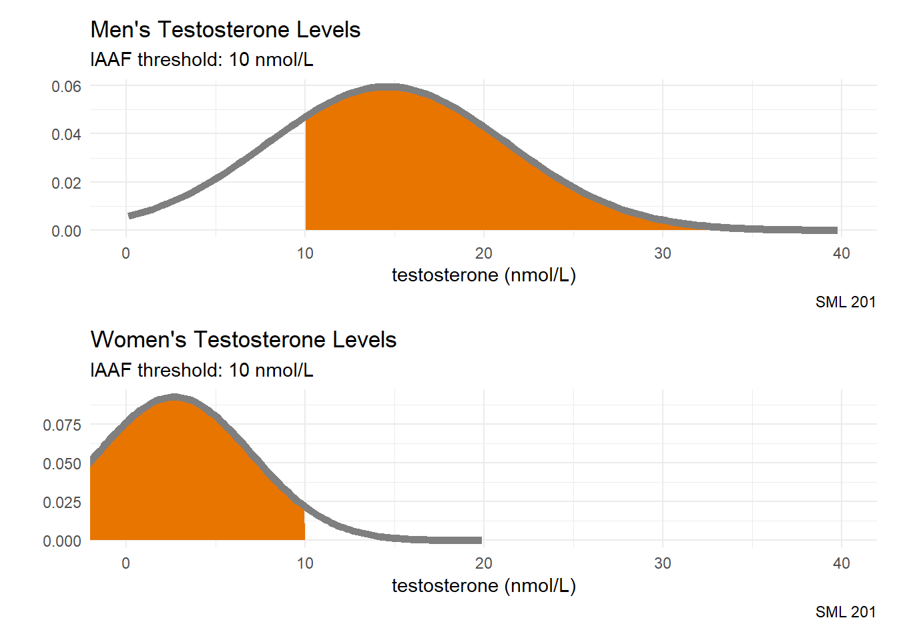
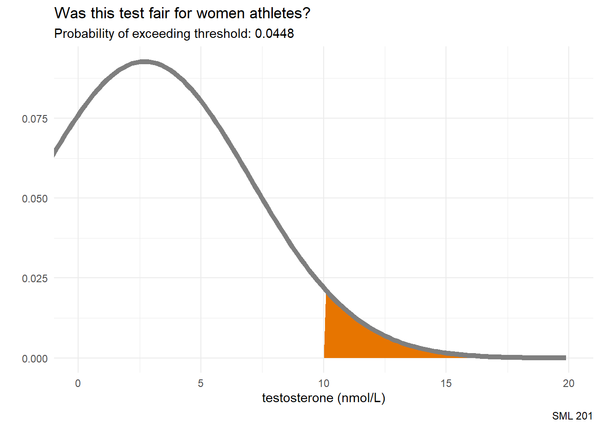
Further thoughts:
- The probability of exceeding the threshold is not zero
- So far, one explanatory variable
- Does this show causation with performance enhancing?
- Probabilistic computation assumed normal distribution. One could use a nonnegative, skewed (not symmetric) distribution, such as a beta distribution.
plot_men <- vnorm(10, 14.6, 6.7, section = "upper") +
labs(title = "Men's Testosterone Levels",
subtitle = "IAAF threshold: 10 nmol/L",
caption = "SML 201",
x = "testosterone (nmol/L)")
plot_women <- vnorm(10, 2.7, 4.3) +
labs(title = "Women's Testosterone Levels",
subtitle = "IAAF threshold: 10 nmol/L",
caption = "SML 201",
x = "testosterone (nmol/L)")
# patchwork
plot_men <- plot_men + xlim(0, 40)
plot_women <- plot_women + coord_cartesian(xlim = c(0, 40))
plot_men / plot_women
prob_exceeded <- 1 - pnorm(10, 2.7, 4.3)
vnorm(10, 2.7, 4.3, section = "upper") +
coord_cartesian(xlim = c(0, 20)) +
labs(title = "Was this test fair for women athletes?",
subtitle = paste0("Probability of exceeding threshold: ", round(prob_exceeded, 4)),
caption = "SML 201",
x = "testosterone (nmol/L)")Further Reading
- Endocrine profiles in 693 elite athletes in the postcompetition setting by Healy, et al
- Testosterone Levels by Age at Health Line
- Testosterone levels won’t determine transgender athletes’ eligibility, IOC says by Tom Goldman
- Fairness, Inclusion and Non-Discrimination in Olympic Sport statement by the International Olympic Committee
- Transwoman Elite Athletes: Their Extra Percentage Relative to Female Physiology by Sims and Minson
Animations
The gifski package allows us to make animations from a collection of still images.
Horizontal Translation
mu_vals <- seq(-4, 4, by = 0.5)- \(x \in [\mu - 1.23, \mu + 1.23]\)
- \(\sigma = 1\)
mu_vals <- seq(-4, 4, by = 0.5)
N <- length(mu_vals)
for(i in 1:N){
this_plot <- vnorm(c(mu_vals[i] - 1.23, mu_vals[i] + 1.23),
mu_vals[i], 1, section = "between") +
labs(title = "Normal Distribution",
subtitle = "Changing the Mean") +
xlim(-5, 5)
ggsave(paste0("images/norm_plot", LETTERS[i], ".png"), this_plot)
}
png_files <- Sys.glob("images/norm_plot*.png")
gifski::gifski(
png_files,
"norm_animation.gif", #output file name
height = 800, width = 800, #you may change the resolution
delay = 1/2 #seconds
)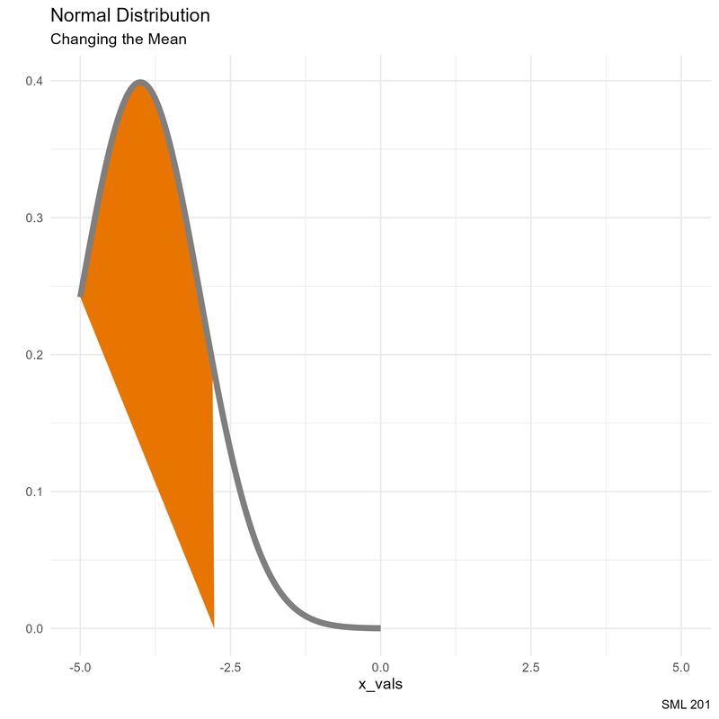
Increasing Sample Size
Here we will use the vbinom function with various increasing values for the sample size \(n\) and a constant value for the population proportion \(p\).
n_vals <- seq(9, 30)
n_vals <- seq(9, 30)
p <- 0.37
N <- length(n_vals)
for(i in 1:N){
this_plot <- vbinom(round(n_vals[i]/4):round(3*n_vals[i]/4),
n_vals[i], p, labels = FALSE) +
labs(title = "Binomial Distribution",
subtitle = "Increasing the Sample Size")
ggsave(paste0("images/CLT_plot", LETTERS[i], ".png"), this_plot)
}
png_files <- Sys.glob("images/CLT_plot*.png")
gifski::gifski(
png_files,
"CLT_animation.gif", #output file name
height = 800, width = 800, #you may change the resolution
delay = 1/3 #seconds
)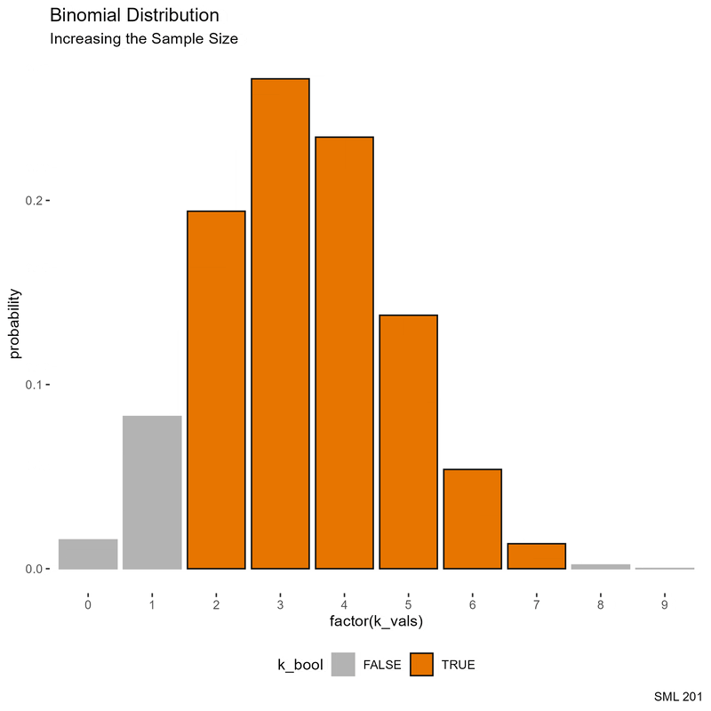
Toward Significance
Traditionally, scientists sought out extreme values among the 5 percent probability combined in the tails. What are the MCV levels for these regions?
qnorm(c(0.025, 0.975), 90, 5)[1] 80.20018 99.79982
NoteCentered Area
In upcoming statistics tools, it is common to request 95 percent centered probability (especially with symmetric distributions).
- Leaves 5 percent area in the tails
- Each tail’s boundary is at the 2.5 and 97.5 percentiles respectively
vnorm(qnorm(c(0.025, 0.975), 90, 5),
90, 5, section = "tails") +
labs(title = "Two-Tailed Significance",
x = "fL/cell")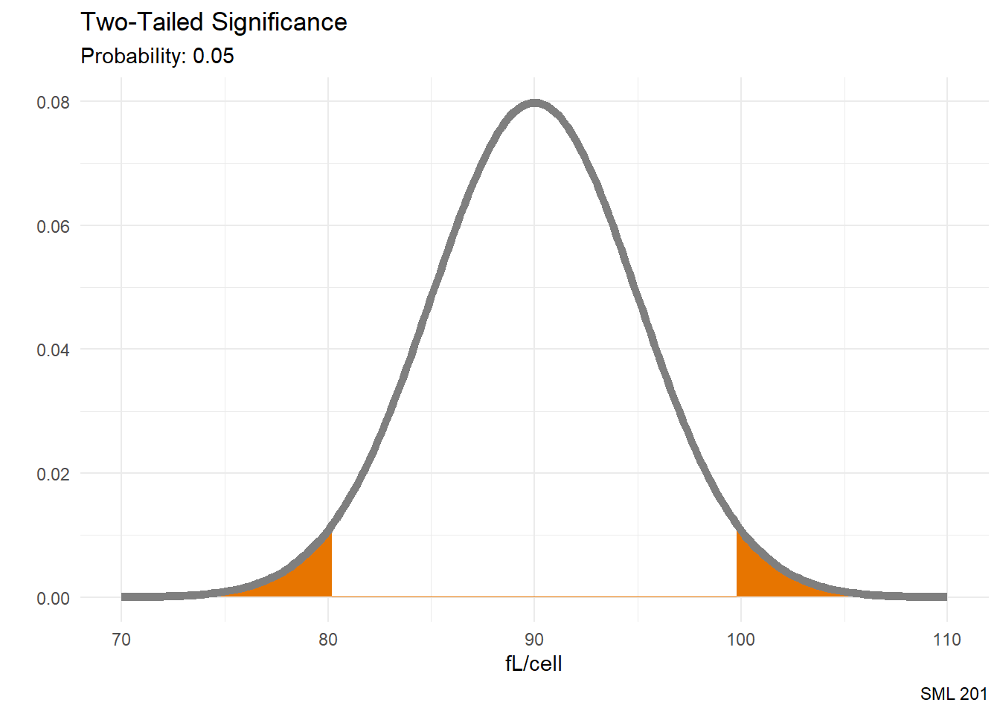
WarningDCP3
Bell Curve History
- 1822 - 1911
- cousin of Charles Darwin
- correlation discovery
regression to the mean
Could anything be said about the regularity with which individuals differences of various magnitudes could be expected? Quetelet answered in the affirmative, drawing inspiration again from a tool of astronomy: Laplace’s law of distribution of error, or what we now call the normal distribution
—Bernoulli’s Fallacy, page 114
the perfect tool for a mind like Galton’s, seeking structure and ordered hierarchies out of the messy chaos of human variety. His interest in the distribution was, in a sense, the polar opposite of Quetelet’s. Where Quetelet had used the normal error laaw to glorify the average man, Galton focused on the extremes
—Bernoulli’s Fallacy, page 137
Putting these two ideas together was the grand project of 20th century evolutionary biology now called the modern synthesis. One of the chief obstacles to achieving that synthesis was that certain traits, say height or skull size, appeared to vary continuously in a population
—Bernoulli’s Fallacy, page 153
WarningModern Synthesis
statistics + genetics \(\rightarrow\) eugenics
Yale president Ezra Stiles implemented the first grading scale in the United States based on four descriptions:
- Optimi
- Second Optimi
- Inferiores
- Perjores
Grading Curves
In a past teaching job, Derek would apply a grading curve as follows:
- “A” to the top 9 percentile
- “A-” to the next 9 percentile
- etc.
Suppose that a class of Calculus students took an exam and the grading yielded a sample average of \(\bar{x} = 70\) and a sample standard deviation of \(s = 15\) percentage points. Derek’s curve would look like
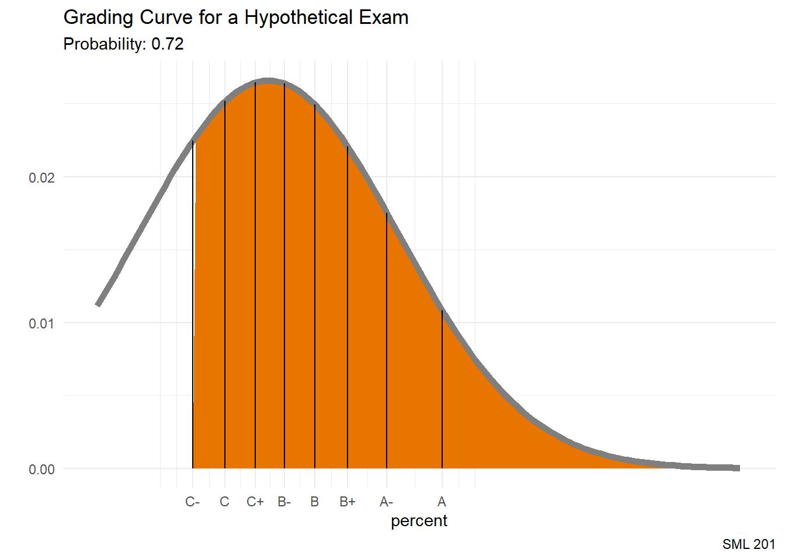
On a recent exam, data science students had a sample average of \(\bar{x} = 81.75\) and a sample standard deviation of \(s = 13.77\) percentage points. Derek’s curve would look like
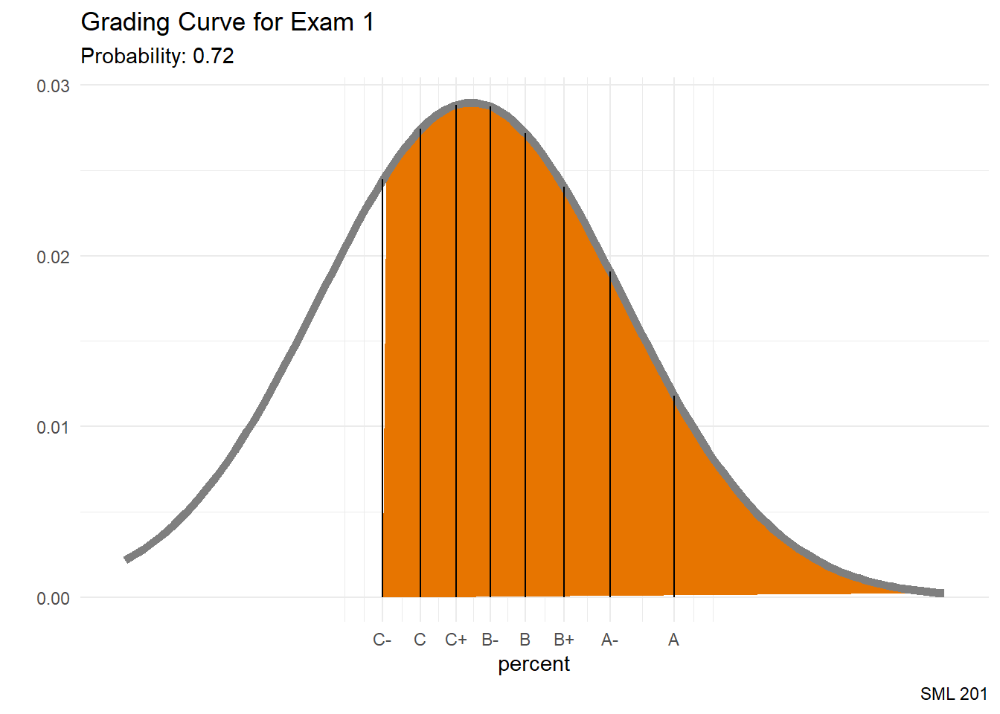
# patchwork
p1 / p2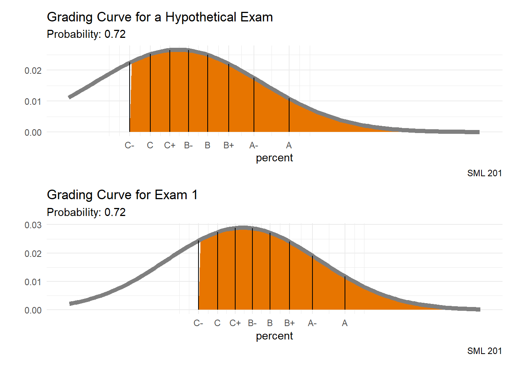
xbar <- 70
s <- 15
curve_percentiles <- seq(28, 100, by = 9)/100
breakpoints <- qnorm(curve_percentiles, xbar, s)
df_vert <- data.frame(
x_breakpoints = breakpoints,
y_breakpoints = dnorm(breakpoints, xbar, s)
)
p1 <- vnorm(qnorm(0.28, xbar, s), xbar, s, section = "upper") +
geom_segment(aes(x = x_breakpoints,
y = 0,
xend = x_breakpoints,
yend = y_breakpoints),
data = df_vert) +
labs(title = "Grading Curve for a Hypothetical Exam",
x = "percent") +
scale_x_continuous(
breaks = breakpoints,
labels = c("C-", "C", "C+", "B-", "B", "B+", "A-", "A", ""),
limits = c(50, 125)
)
p1xbar <- 81.75
s <- 13.77
curve_percentiles <- seq(28, 100, by = 9)/100
breakpoints <- qnorm(curve_percentiles, xbar, s)
df_vert <- data.frame(
x_breakpoints = breakpoints,
y_breakpoints = dnorm(breakpoints, xbar, s)
)
p2 <- vnorm(qnorm(0.28, xbar, s), xbar, s, section = "upper") +
geom_segment(aes(x = x_breakpoints,
y = 0,
xend = x_breakpoints,
yend = y_breakpoints),
data = df_vert) +
labs(title = "Grading Curve for Exam 1",
x = "percent") +
scale_x_continuous(
breaks = breakpoints,
labels = c("C-", "C", "C+", "B-", "B", "B+", "A-", "A", ""),
limits = c(50, 125)
)
p2
WarningDangerous Curves
As we have seen, a grading curve can hurt students if the exam average was relatively high.
TipNomenclature
Of course, what students are really asking for is a shift in the grades, not a curve.
Quo Vadimus?
Due this Friday (March 20)
- Precept 6
- Coloring Assignment 2
- Pick Group Partners
Project 2
- Assigned: March 23
- Due: April 7
Exam 2: April 23
Exam 1 (out of 65 points):
- average: 53.14
- deviation: 8.95
- top 5: 65, 65, 65, 64, 64
| If this grading curve was applied | |
| to Exam 1 (out of 65 points) | |
| letter_grade | breakpoints |
|---|---|
| A | 65.14 |
| A- | 61.33 |
| B+ | 58.62 |
| B | 56.35 |
| B- | 54.26 |
| C+ | 52.24 |
| C | 50.17 |
| C- | 47.92 |
| Note: this grading curve will not be applied to SML 201 | |
Footnotes
Note(optional) Additional Resources
NoteSession Info
sessionInfo()R version 4.5.2 (2025-10-31 ucrt)
Platform: x86_64-w64-mingw32/x64
Running under: Windows 10 x64 (build 19045)
Matrix products: default
LAPACK version 3.12.1
locale:
[1] LC_COLLATE=English_United States.utf8
[2] LC_CTYPE=English_United States.utf8
[3] LC_MONETARY=English_United States.utf8
[4] LC_NUMERIC=C
[5] LC_TIME=English_United States.utf8
time zone: America/New_York
tzcode source: internal
attached base packages:
[1] stats graphics grDevices utils datasets methods base
other attached packages:
[1] lubridate_1.9.4 forcats_1.0.0 stringr_1.5.1 dplyr_1.1.4
[5] purrr_1.1.0 readr_2.1.5 tidyr_1.3.1 tibble_3.3.0
[9] ggplot2_4.0.0 tidyverse_2.0.0 patchwork_1.3.1 janitor_2.2.1
[13] gt_1.0.0
loaded via a namespace (and not attached):
[1] gtable_0.3.6 jsonlite_2.0.0 compiler_4.5.2 tidyselect_1.2.1
[5] xml2_1.3.8 snakecase_0.11.1 scales_1.4.0 yaml_2.3.10
[9] fastmap_1.2.0 R6_2.6.1 labeling_0.4.3 generics_0.1.4
[13] knitr_1.50 htmlwidgets_1.6.4 tzdb_0.5.0 pillar_1.11.0
[17] RColorBrewer_1.1-3 rlang_1.1.6 stringi_1.8.7 xfun_0.52
[21] sass_0.4.10 S7_0.2.0 timechange_0.3.0 cli_3.6.5
[25] withr_3.0.2 magrittr_2.0.3 digest_0.6.37 grid_4.5.2
[29] rstudioapi_0.17.1 hms_1.1.3 lifecycle_1.0.4 vctrs_0.6.5
[33] evaluate_1.0.4 glue_1.8.0 farver_2.1.2 rmarkdown_2.29
[37] tools_4.5.2 pkgconfig_2.0.3 htmltools_0.5.8.1